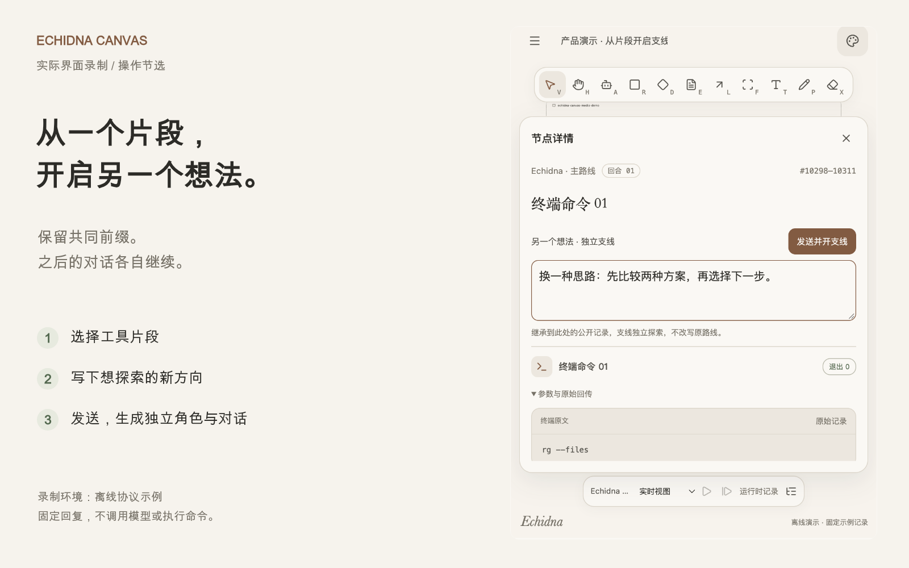
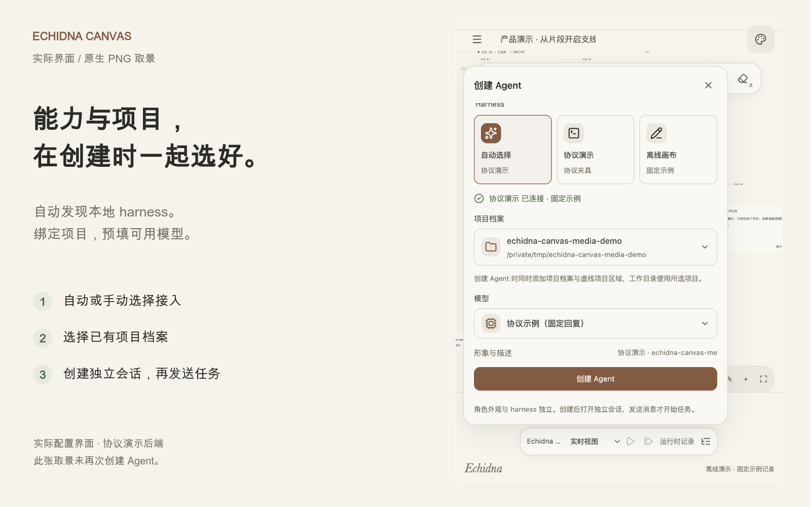
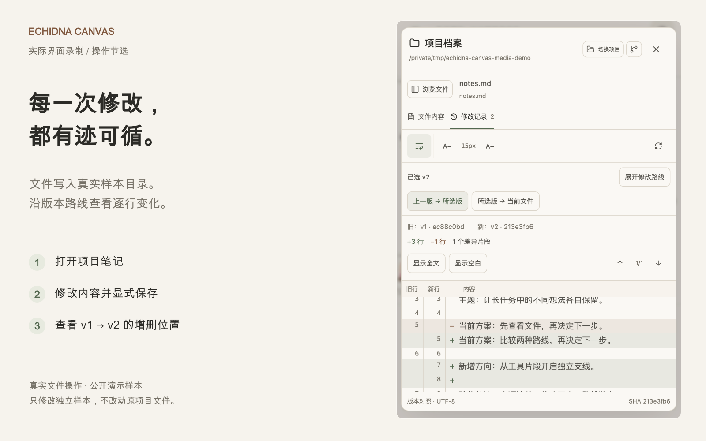
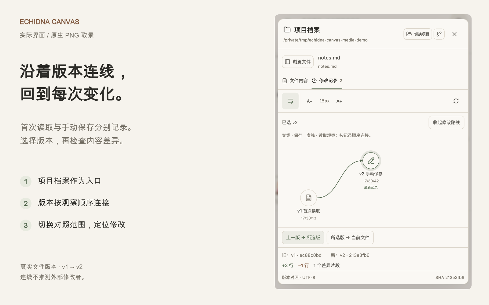
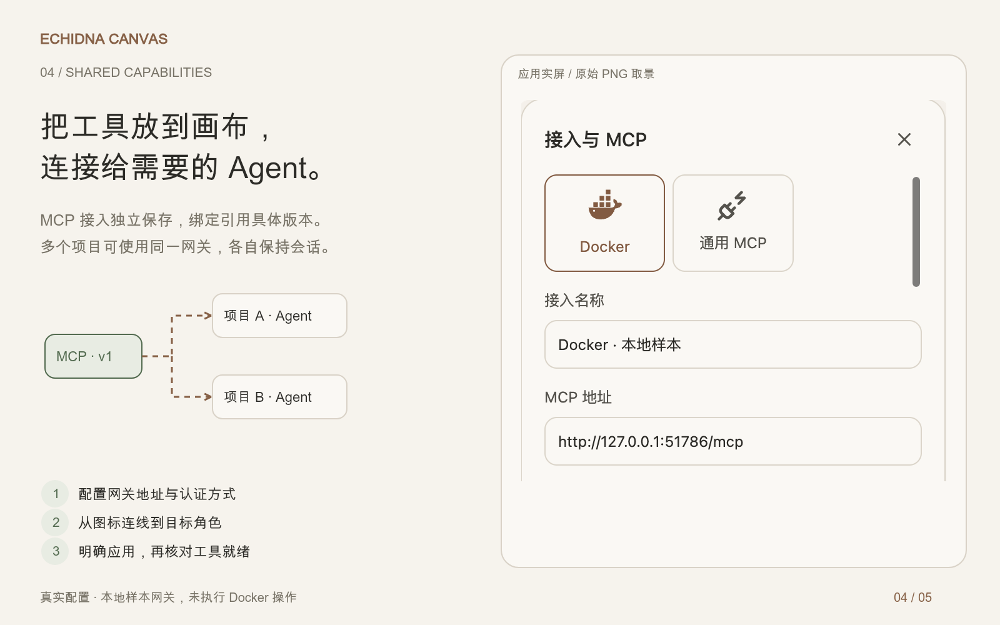
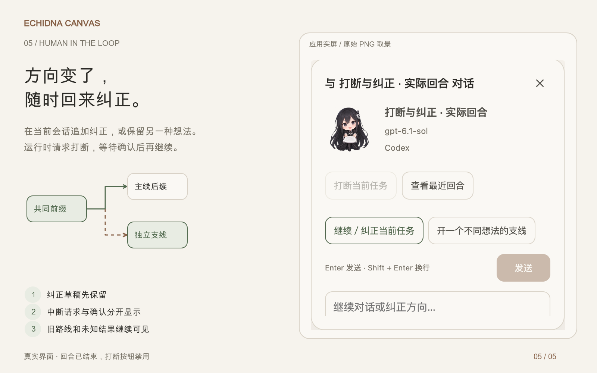

从片段上下文分支，到项目版本和独立 MCP 接入。这里汇总实际界面取景与功能讲解，原始无损截图另行保留。
17.5 秒实际界面节选，选择片段、输入新方向、发送支线并打开新对话。使用离线协议示例， 不调用模型或执行示例命令。未加注解的原始比例录屏。
17 秒实际文件操作，保存到独立公开样本，核对 v1 → v2 的 +3／−1 行。 未加注解的原始比例录屏。
功能示意动画，无音频。展示共同前缀与后续隔离，不代表新增任务录屏。





